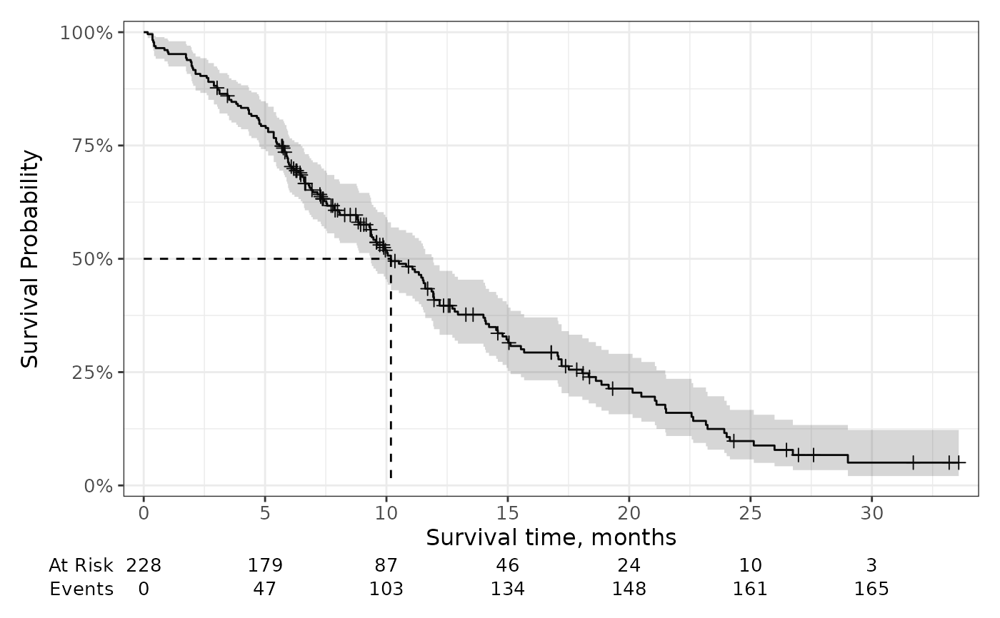

Plot survival probabilities (and other transformations) using the results
from survfit2() or survival::survfit(); although, the former is recommend
to have the best experience with the ggsurvfit package.
Usage
ggsurvfit(
x,
type = "survival",
linetype_aes = FALSE,
theme = theme_ggsurvfit_default(),
...
)Arguments
- x
a 'survfit' object created with
survfit2()- type
type of statistic to report. Available for Kaplan-Meier estimates only. Default is
"survival". Must be one of the following or a function:type transformation "survival"x"risk"1 - x"cumhaz"-log(x)"cloglog"log(-log(x))- linetype_aes
logical indicating whether to add
ggplot2::aes(linetype = strata)to theggplot2::geom_step()call. When strata are present, the resulting figure will be a mix a various line types for each stratum.- theme
a survfit theme. Default is
theme_ggsurvfit_default()- ...
arguments passed to
ggplot2::geom_step(...), e.g.size = 2
Details
This function creates a ggplot figure from the 'survfit' object. To better understand how to modify the figure, review the simplified code used internally:
survfit2(Surv(time, status) ~ sex, data = df_lung) %>%
tidy_survfit() %>%
ggplot(aes(x = time, y = estimate,
min = conf.low, ymax = conf.low,
color = strata, fill = strata)) +
geom_step()See also
Visit the gallery for examples modifying the default figures
Examples
# Default publication ready plot
survfit2(Surv(time, status) ~ sex, data = df_lung) %>%
ggsurvfit() +
scale_ggsurvfit(x_scales = list(breaks = seq(0, 30, by = 6)))
# Changing statistic type
survfit2(Surv(time, status) ~ sex, data = df_lung) %>%
ggsurvfit(type = "cumhaz")
# Configuring KM line type to vary by strata
survfit2(Surv(time, status) ~ sex, data = df_lung) %>%
ggsurvfit(linetype_aes = TRUE) +
scale_ggsurvfit()
# Customizing the plot to your needs
survfit2(Surv(time, status) ~ 1, data = df_lung) %>%
ggsurvfit() +
add_censor_mark() +
add_confidence_interval() +
add_quantile() +
add_risktable() +
scale_ggsurvfit()
